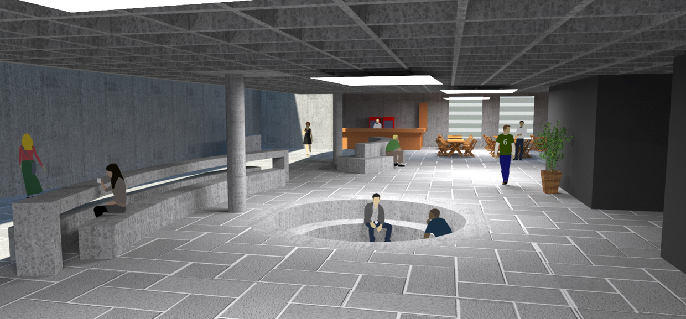
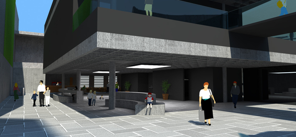
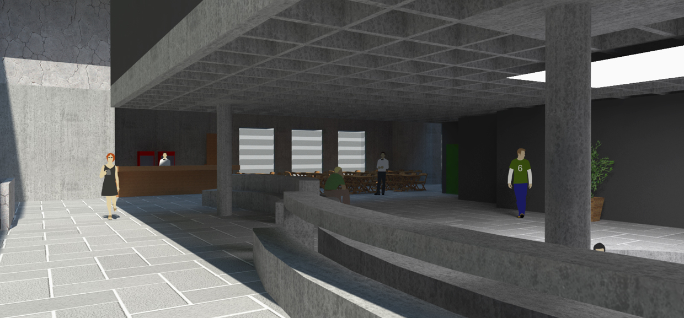
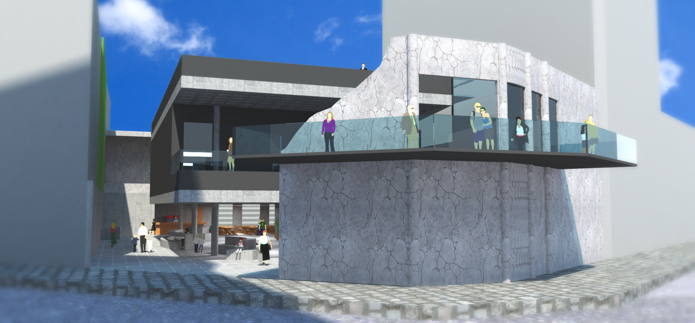

Designed for PUC Minas’ Graduation Project, this work arose from a concern regarding the marginalization of those who decide to work with art in the suburbs,. My intention was to foster the development of the most diverse art forms, especially those originated in the suburbs.
The project consists of the articulation of two main propositions: one with a design character, in the form of a dynamic and itinerant object, which subsidizes the work of artists from the periphery; another as a collaborative mapping platform, an initiative that helps to identify the various artistic agents that remain hidden in the cultural scene.
The proposed object switches between two basic functions: A recording studio and a stage for performances.
This project was carried out in the ninth semester of the Architecture and Urbanism course of PUC-Minas, during the discipline of Executive Building Project under the guidance of Professor Clarissa Bastos. The program required the creation of an office tower, which also housed shops on the ground floor.
The project is a housing complex located in the city of Belo Horizonte. The resolution of the architectural problem was primarily based on the understanding and adaptation of built shape to the site in which it operates. It’s sharp relief caused the volume to be scaled at different levels.
The housing units were arranged in two blocks that run in the form of a "L", seeking greater use of different viewpoints offered by the land. The insertion of the building in the border turned out to generate a free space on the center, which features a large permeable area, and also includes a plateau which is the roof slab of the underground garage, created as a common space for residents. The horizontal movement takes place behind the building by means of ramps that leads to the units that offers accessibility to disabled users.
A series of "tears" were made on the built form, creating passages that cross the space and provide greater communication between the bordering areas and the houses. On those points there are plants responsible for acclimatizing the space that also works as some sort of shelter.
The housing units are diversified, providing solutions that can serve different user profiles and interests. On total there are 36 residential units, plus a commercial establishment. 21 of them are arranged in duplex, and vary in size and plant solution. The staggering of the building enabled the creation of large terraces that are integrated as part of the units located on the tops and on the volume tips. It was our intention to soften the individualistic character usually found in housing, creating spaces that may favor the greater communication and integration among the inhabitants.
Designed for PUC Minas’ Building Project discipline on the year of 2013.
This project was developed during the Eighth Semester of the Architecture and Urbanism course of PUCMinas, during the discipline of Interior Design under the guidance of Professor José Euzébio. It consisted of an architectural intervention on an old cinema active in the city of Belo Horizonte during the 60’s.
The "Cine Candelaria Concert Hall" is an intervention project on an old cultural theater located in Raul Soares Square, declared a Historical and Cultural Heritage of Belo Horizonte - Minas Gerais, Brazil.
The intent of this project was to rescue the cultural value and the assets that the cinema provided to this area of town. It consists of an auditorium for music performances evaluated on a “pilotis” that creates on the level below a location that serves as the public part of the project, that contains not only a bar but also a free space filled with benches designed to create a comfortable living space, opened to many different uses and people.
The object was inserted into the ruins that were left of the Cinema, and is connected to them by a balcony that runs through the ruin and extends the foyer of the auditorium to the outside, physically integrating the old and the current "Cine Candelaria". A large ramp protected by glass, makes the connection between the pilotis, the auditorium and the terrace, a third living space with gardens and benches, from where you can see the entire Raul Soares square.
Project developed during the Built Environment Intervention course at PUC Minas in the first half of 2012, under the guidance of Professor Claudio Bahia.
   